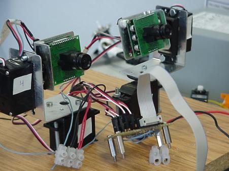

HISTORIA
Los OjOs son una creación mecánica de Andrés Prieto-Moreno Torres,
que cayó en nuestras manos con la idea de darles un poco de "vida". En aquellos
momentos en el Club estabamos iniciándonos en temas de visión artificial, y nos sirvió
de plataforma de pruebas para la realización de algoritmos de seguimiento de objetos,
detección de movimiento, etc. que posteriormente hemos aplicado a los microbots.

Imagén de los OjOs
ESTRUCTURA
En la foto anterior se puede apreciar el montaje de las cámaras sobre una estructura
de servos que permiten todos los grados de libertad. El sistema incluye además una placa
con microcontrolador 68HC11 (CT6811 de Microbotica) que actua de puente entre el PC y
los servos, de modo que transforma la posición en grados indicados desde la aplicación
a la señal PWM correspondiente.
 Control desde un PC
Control desde un PC
SOFTWARE
El control de los OjOs se simplifica bastante al disponer en el sistema de un microcontrolador,
que no solo aporta la conversión de ángulos a PWM equivalente, sino también un
puerto serie, lo que hace que sea sencillo de controlar desde un PC, otro microcontrolador, etc.
De este modo, el sistema es perfectamente adaptable a cualquier aplicación, ya se de control o un
software de detección de movimiento, etc.
Los OjOs también pueden ser controlados directamente (sin intervención de un microcontrolador)
por otras plataformas, como se muestra en el
proyecto Labobot, que estudia las ventajas de las FPGAs para el control
de sistemas con servos, frente a microcontroladores.
 Control de los OjOs desde una FPGA (Proyecto Labobot)
Control de los OjOs desde una FPGA (Proyecto Labobot)
Documentos adicionales